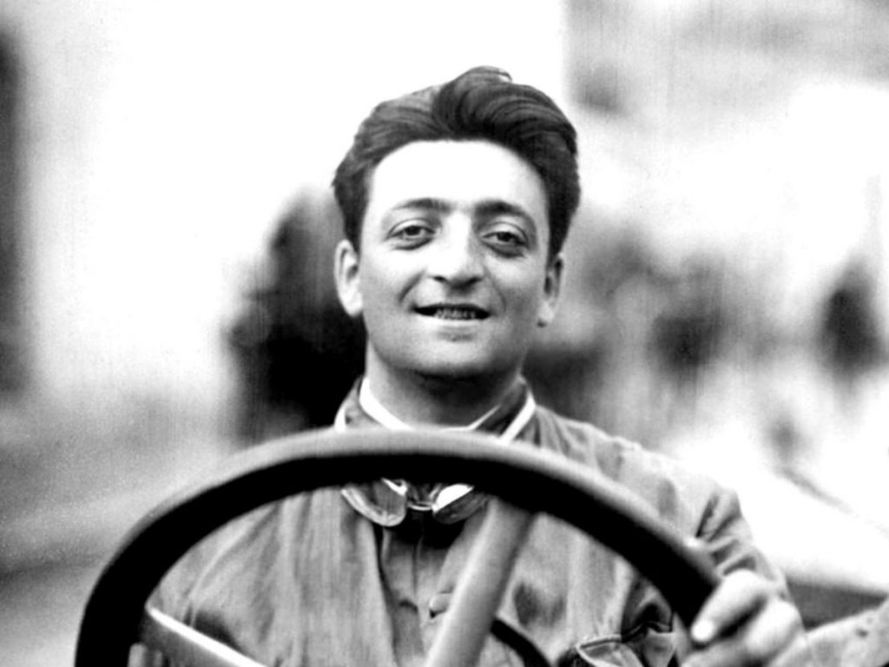
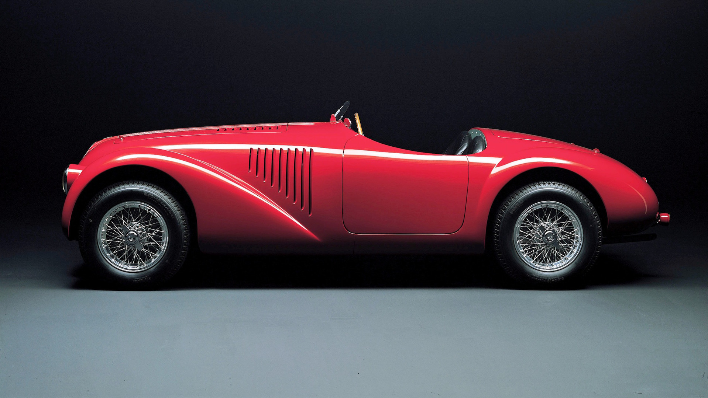

Tarihçemiz

Enzo Ferrari, Modena şehrinde 1898 yılında dünyaya geldi. I. Dünya Savaşı'nda babasını ve kardeşlerini kaybettikten sonra 1916 yılında, henüz 18 yaşındayken yalnız kaldı. Yarışçılık kariyeri de bu dönemlerde başladı.
1920 yılında Alfa Romeo'nun yarış pilotlarından biri oldu, ismi de bu dönemde bir efsane misali kulaktan kulağa yayıldı. Onun da öncülüğünde Alfa Romeo araba yarışçılığının bir numaralı ismi oldu. Enzo Ferrari'nin hız tutkusu ve daha önce hiç kimsenin ulaşamadığı hızlarda virajları dönebilme kabiliyetinin yanı sıra arabasının ergonomisinden motor aksamına her şeyiyle ilgilenmesi, onu araba yarışları tarihinin ölümsüzleri arasına soktu.
1929 yılında Scuderia Ferrari'yi Alfa Romeo'nun yarış takımı olarak kurdu. 1932'ye kadar yarışmaya devam etti; ancak oğlu Dino Ferrari'nin doğumuyla yarışlardan ayrılarak, otomobil fabrikasının işlerine geçti. Bu dönemde araba motorlarının güçsüzlüğü ve hafif spor arabaların gelişmesi üzerine çalışmalara başladı.
Kontrolündeki yarış takımı katıldığı tüm yarışları kazandı, sadece 1935'te Mercedes'e geçildi. 1935'te Mercedes'in bu yarışı kazanmasında Castrol'un deterjan bazlı motor temizleyicisi büyük rol oynadı. Bu motor temizleyicisi, Mercedes'in motorunu Alfa Romeo'dan daha üstün performanslı ve istikrarlı kılmıştı. Ertesi yıl Castrol ürünlerini Alfa Romeo da kullanmaya başladı;
günümüzde de hâlâ Castrol motor bakımı ürünleri sunmaktadır
Enzo Ferrari'nin yarış otomobillerini yaratma becerisi onu Alfa Romeo'nun sportif direktörü yaptı. Ancak Enzo Ferrari'nin detaylarına bakmadan imzaladığı direktörlük kontratında, ayrılması durumunda 4 yıl başka bir yarış takımında çalışamayacağı ve tasarım yapmasının yasak olduğu kuralı vardı. Böylece kendi yarattığı, o güne kadar eşi benzeri görülmemiş otomobil ergonomisini geliştirmesine de izin verilmedi.
Direktörlükten ayrılmasıyla Auto-Avio Costruzioni'yi kurdu. Bu şirket bazı yarış takımlarına parçalar satıyordu. Doğduğu şehir Modena'da küçük bir araba üretimi atolyesi kurdu ve burada sadece kendinin kullanması için bir araba yapmaya çalıştı. Ancak II. Dünya Savaşı'nın başlamasıyla İtalya zor günler geçirmekteydi. Modena'nın bombalanmasıyla, tasarımına yeni başladığı arabayı da bitiremeden Maranello'ya taşınmak zorunda kaldı. Yıllar sonra Ferrari Modena 360, Enzo Ferrari'nin kütüphanesinde kalan basit bir ön tasarımı baz alarak Pininfarina tarafından yapılacaktır.
İlk Arabamız

Ferrari, bu hafta spor otomobil mirasının 70’inci yılını kutluyor. Ferrari markasının kurucusu ve CEO’su Enzo Ferrari 12 Mart 1947 tarihinde adını taşıyan ilk modeli çalıştırmış ve Maranello sokaklarında test sürüşü yapmıştı.
125 S, Ferrari amblemini taşıyan ilk spor otomobildi ve kaputun altında, Giuseppe Busso ve Luigi Bazzi adlı mühendislerin yardımı ile Gioacchino Colombo tarafından tasarlanan 12 silindirli motor bulunuyordu. İlk testini 12 Mart'ta gerçekleştirdikten sadece iki ay sonra otomobil ilk gösterimini 11 Mayıs'ta Piacenza Circuit'te gerçekleştirmişti.